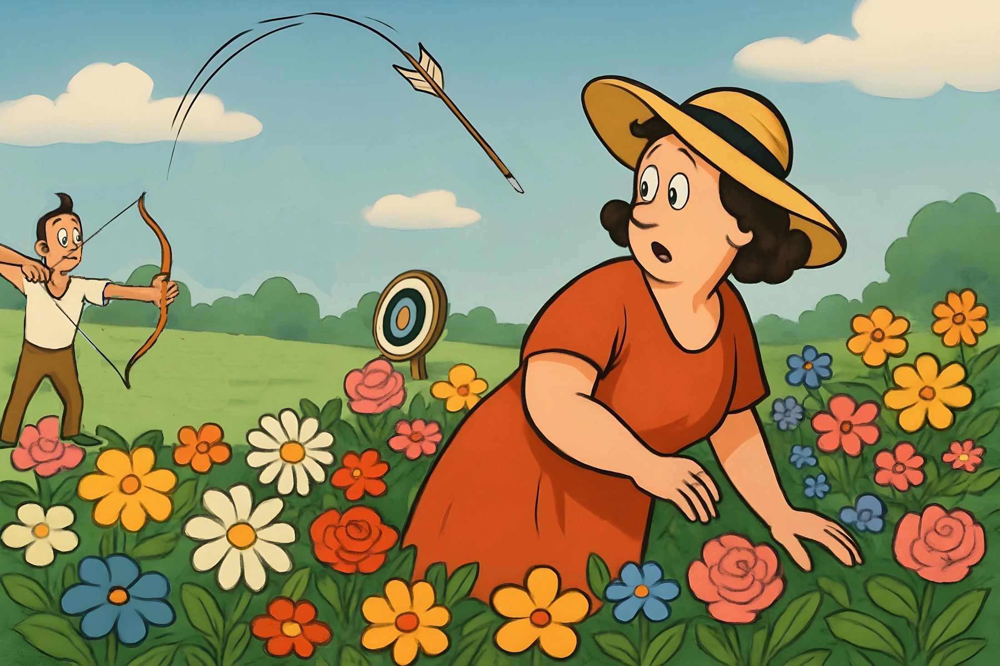

It was a warm April evening in Texas, and Fran Gretski had just returned home from work. She decided to work in her flower garden before preparing dinner. As she walked across her patio, something terrible happened. She felt a horrifying blow to the right side of her neck, as if someone had hit her with a baseball bat.
Confused and shocked, Fran reached up to touch her neck. To her horror, she discovered that she had been shot with an arrow. She grabbed the arrow tightly and ran inside, screaming for her husband Ed who immediately called 911.
The arrow had come from a young man practicing with a compound bow in his backyard. He lived across the alley and was shooting arrows to the north, away from Fran's house. The arrow had ricocheted and changed direction, traveling over two or three fences, through shrubs and an oak tree, between hanging baskets, and straight into Fran's neck. Fortunately, he was using a practice arrow, which is smooth and rounded. A broadhead arrow used for hunting would have killed her instantly.
The paramedics arrived and called for a medical helicopter to take Fran to a trauma center in Amarillo, about 65 miles away. During the flight, she tried to stay calm despite the frightening situation.
At the hospital, doctors performed a CT scan to see exactly where the arrow was located. They were amazed by what they found. The arrow had gone between her carotid artery and jugular vein. The arrow had somehow pushed the artery aside without damaging it. There was no bleeding at all.
The doctors kept telling Fran how incredibly fortunate she was to have survived such a dangerous accident.
After successful surgery to remove the arrow, the doctors discovered something that would change everything. The CT scan had revealed a brain tumor. Although they believed it was benign (not cancerous), it was located in a dangerous position and needed to be removed immediately. The tumor was about to cross the midline of her brain, which would have caused a massive stroke.
The brain surgery was successful, and Fran recovered at home. However, her medical journey wasn't over. Two years later, during a routine MRI check to monitor her brain tumor removal, doctors discovered another problem: a brain aneurysm. These life-threatening anomalies are usually only found after they rupture, which is almost always fatal. The aneurysm was fragile and covered with blisters, ready to burst at any moment. The emergency surgery was a success.
Fran realized that without that arrow accident, she could have died from the brain tumor or aneurysm. Instead of killing her, the arrow saved her life by leading to the discovery of these hidden medical conditions.
This extraordinary sequence of events shows how sometimes what appears to be a terrible incident can be a good one in disguise.
Dictation Check